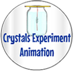
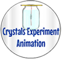

This website is part of the ISP (Inquiry-based Science Project) Tutor. Follow the steps below to find information about the research question above. You can also find information about many other areas of science, play interactive science games and check your knowledge by answering different questions!
- Click on the Plan Your Research button below (on the left) for important tips on making an overall
plan for doing your background research, including what information to find out about. Click on the Animation
button (below right) to watch (or re-watch) an animation for one trial of your experiment to get more ideas
about what information to look up.
 

Tip: Make sure to write down the information you want to look up so you don't forget anything (or get side-tracked).
You can type what you would like to find out about in the search bar above (as shown below). Click on the little magnifying glass and you'll see a list of units that include those key words. Simply click on the hyperlink of a unit with information you'd like to find out about. You may need to click on the orange arrows at the bottom of the page to find the info you're looking for in that unit (since some units have more than one page).

- Or you can click on one of the four Area of Science
buttons at the top of the page for the area of science of your research question (such as the "Forces & Motion"
or "Chemical & Physical Reactions" button, circled above). This will give you a list of units that are related
to the topic of your experiment.
You can always come back to this page by clicking on the "Home & Help" button at the top of the page you're on
(the Help and four Areas of Science buttons will be on every page).
If you still need help and don't know what to do, ask your teacher (or another adult) to help you.


***Note for Teachers: You can access more information about the BRM on the ISP Tutor website.
©2019 Klahr Lab, Carnegie Mellon University. All Rights Reserved
Carnegie Mellon University | Dept. of Psychology | 5000 Forbes Ave. | Pittsburgh, PA 15213 The TED project was funded in part by the Institute of Education Science (IES), Grant R305H060034, and in part by the National Science Foundation, Grant SBE035442. The ISP Tutor project is funded by IES, Grant R305A170176.
The research reported here was supported by the Institute of Education Sciences, U.S. Department of Education, through Grant R305A170176 to Carnegie Mellon University. The opinions expressed are those of the authors and do not represent views of the Institute or the U.S. Department of Education.